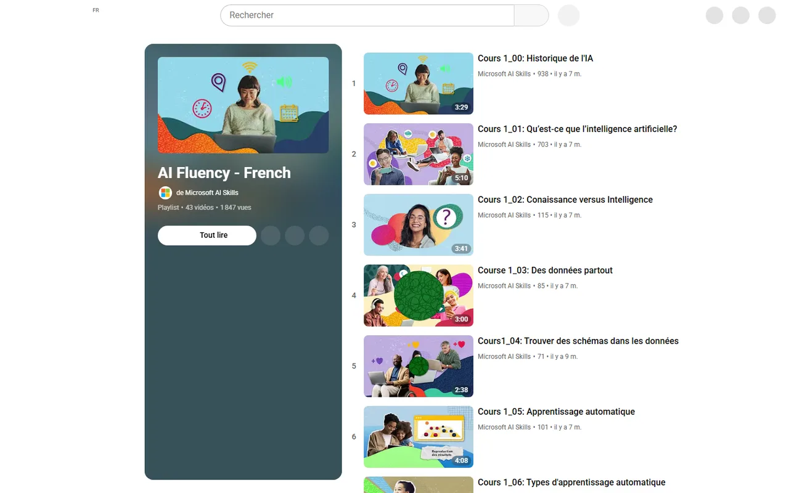
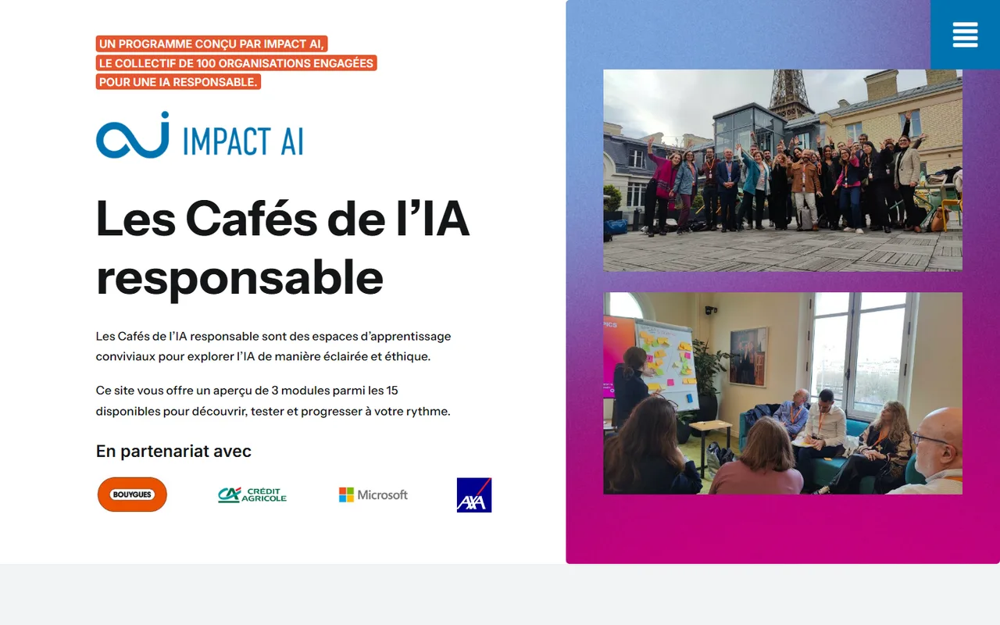

La nouvelle littéracie ne se résume pas à comprendre l'IA. Elle articule trois piliers indissociables que Microsoft outille chacun avec un dispositif déjà déployé, gratuit, mesurable.
Vidéos AI Literacy Microsoft + AI Skills Navigator (200+ contenus FR gratuits, certifiants).

Plateforme formation-ia-responsable.fr portée par Impact AI. Cafés IA en présentiel partout en France. Approche neutre, indépendante des produits.

Calendrier de l'IA — France Travail × Microsoft × Kokoroe. 31 micro-formations gratuites accessibles via l'Emploi Store. Public le plus exposé à la fracture numérique.
Accéder au Calendrier de l'IA sur l'Emploi Store France Travail